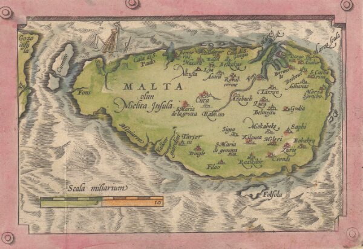
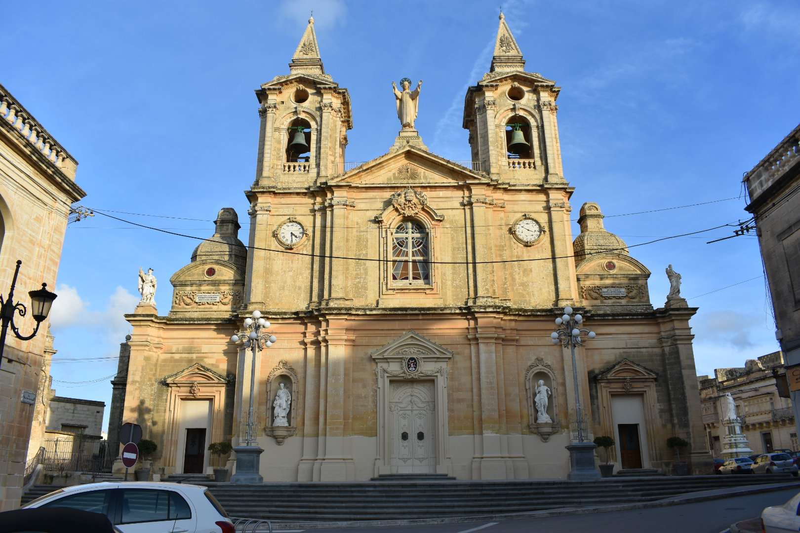
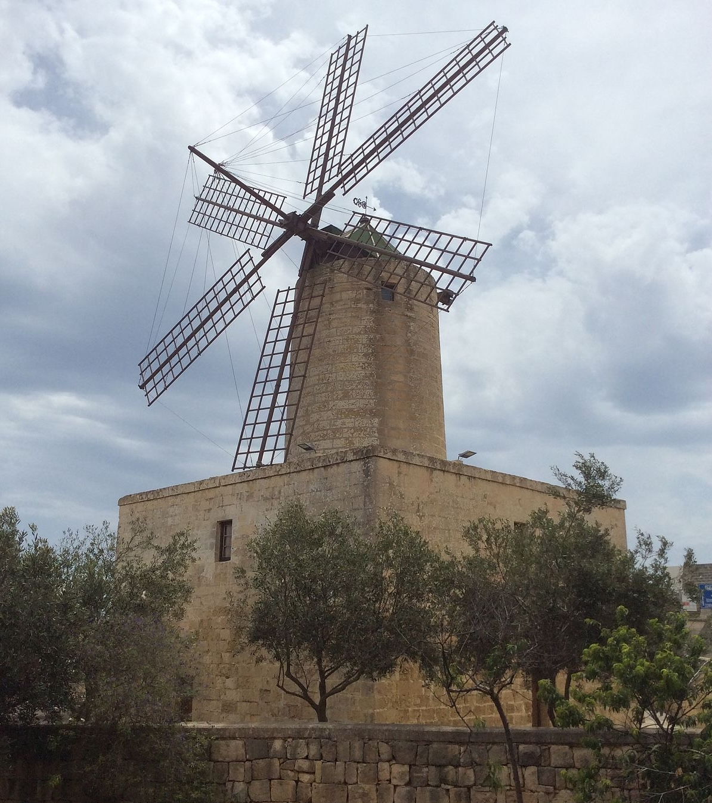

The History of Żurrieq
Żurrieq was inhabited since the bronze age by a relatively large population. The largest village in the area,
it is also the centre of most of its commercial activities and offers a number of interesting sites. The first
historical reference to this village goes back in 1399. The villages of Ħal Lew, Ħal Millieri, Ħal Manin,
Bubaqra, Ħal Far, Nigret and Qrendi used to make part of the village itself, until in 1618 the village of Qrendi
became a village of its own right while the others dissolved in a natural way with their area now making an
integral part of the village perimeter. Lying further away from the main village centre there are two other
hamlets, Bubaqra and in-Nigret.

Origins of the name 'Żurrieq'
The Semitic roots indicate the word żoroq would mean blue, but it is not clear for what do they refer.
One may recall the old motto in Latin saying: From the blue sea I took my name.
Population
In 1530, the population numbered 2,000 people living in 400 houses. This phenomenon kept growing up till the
present times when we find a population of 10,000 people residing in the actual town of Zurrieq.
Parish Church & Surroundings

The Parish Church dedicated to St. Catherine of Alexandria knows its roots to a chapel built on the same site
in 1436 by Mons. De Mello. The church we know today is that built on both the site of the chapel dedicated to
St. Catherine as well as an adjacent one dedicated to St. Peter. This was built between 1634 and 1659 on the
plans of architect Lorenzo Gafa'. Inside the church we find six paintings by Mattia Preti. Before the present
titular painting, there was one by Matteo Perez D'Alecio, presently in the church cloister.
There are other paintings by renowned artists such as Luca Garnieri, Frangisku Zahra, Raffael Bonnici Calì and
Alfred Camilleri Cauchi.
In the peripheral area of Zurrieq known as Hal Millieri, one can also find two other chapels, one of which
dating from medieval times and having interesting frescoes.
Archeology
Zurrieq is the site of various archaeological remains dating back from various periods. Phoenician tombs were
discovered in the land known as " Ta' Danieri " limits of "Tal-Hlewwa". In the area known as "Tal-Bakkari",
ruins were unearthed of a chapel, built on even older remains of what may be a Roman temple. Some metres from
this sight there are ruins of one of the towers referred to as 'Torri tal-Bakkari', constructed out of the same
type and size of stone as those found in the chapel's ruins.
Near the Xarolla Windmill, Paleo-Christian tombs were found and are being excavated. In these tombs there are
interesting architectural features rarely found in similar tombs on the island.
Tax-Xarolla Windmill
The Xarolla Windmill at Żurrieq, Malta is one of the windmills constructed by the Order of St. John in the
villages and towns of Malta. It was built in the 18th-century and is presently one of the most preserved
windmills in Malta. The windmill is an agri-tourism attraction and is found in a complex of agricultural
buildings such as a farmhouse, a chapel, catacombs and others. The windmill is also used as an art studio.
In 1674 Grand Master Nicolas Cotoner built five windmills around Malta, one of which was tax-Xarolla.
Tax-Xarolla Windmill was built by Grand Master Antonio Manoel de Vilhena in 1724. Sometimes after 1998,
this was restored to its original working order. It is now the only functioning windmill on the islands of
Malta. This is a valuable witness of local culture and heritage; it still has parts of the original mechanisms
and can still grind the wheat. In the year 2000, this building was passed over to be administered by the Żurrieq
Local Council and is intended to serve also as a cultural centre. The sails were extensively damaged in a gale on
18 March 2022.

Palaces
The Nigret palace was built in 1715 by Chev. Giacobo de Togores. Today the palace serves as a convent and
orphanage run by the Sisters of the Sacred Heart. Another interesting palace is situated in the Bubaqra zone
and is currently owned by a foreign family.
The Armoury
The palace of the Armoury was built in the XVIIth century and was used as such under Grandmasters Pinto,
Ximenes and de Rohan. It is said that Napoleon Bonaparte visited the village of Zurrieq and slept for a night
in this palace.